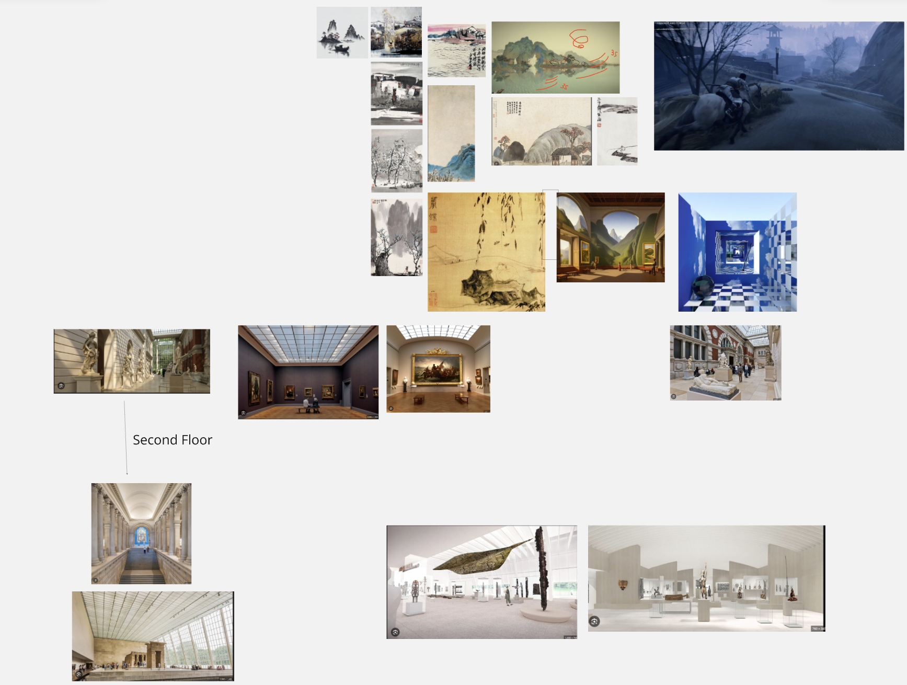
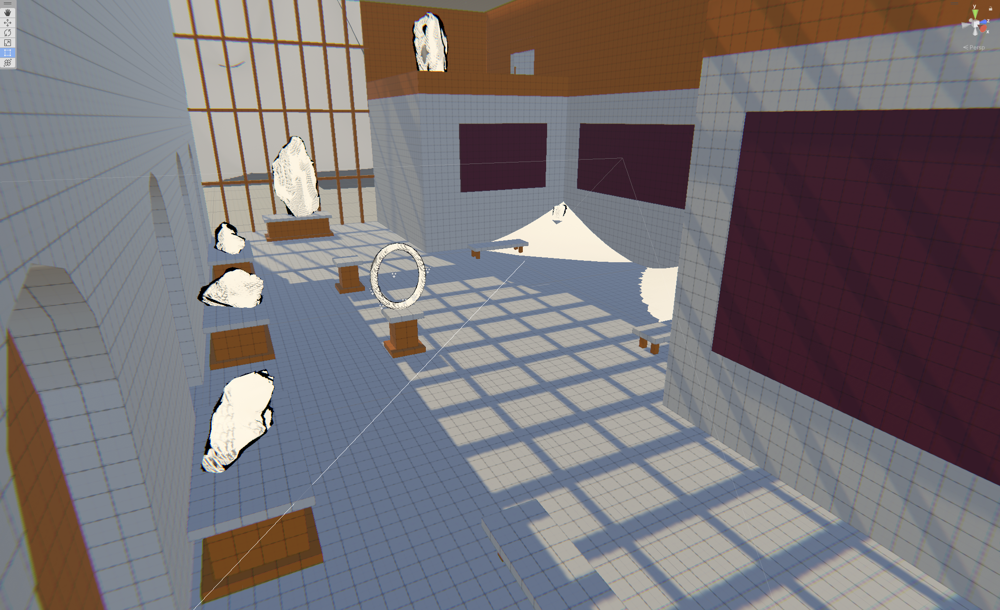
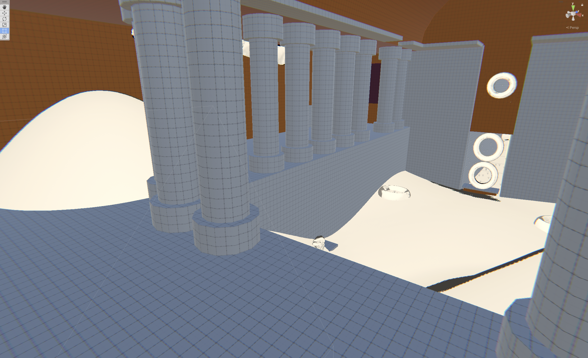
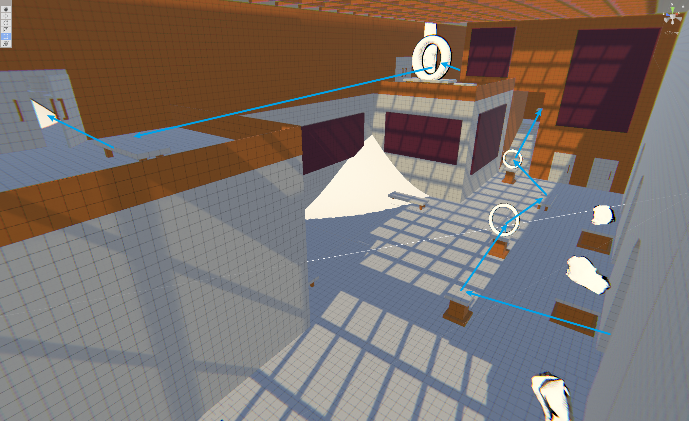
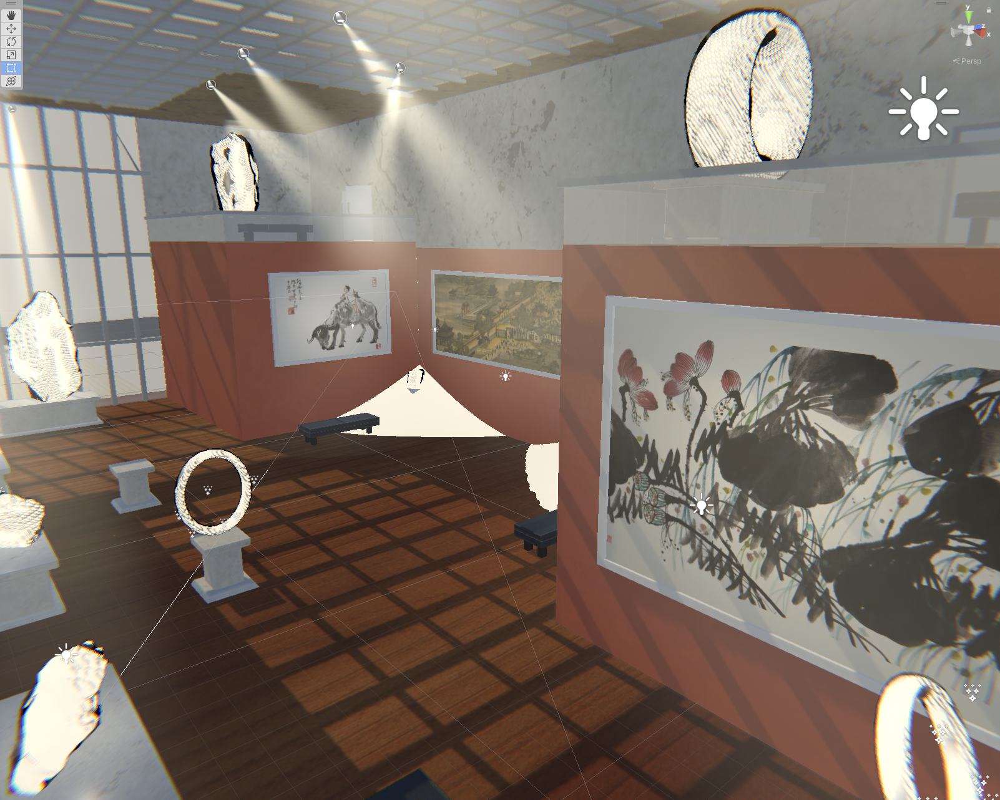
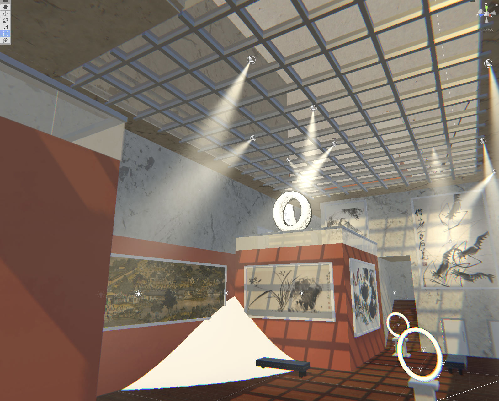

Zhuang Zhou Dreamed of Butterfly - Level Design
Design Goals
1. Narrative Immersion:
- Design levels to transition players from the realistic museum to the dream-like shanshui world.
- Use environmental storytelling to reflect themes of duality and transformation.
2. Flying Mechanic Integration:
- Center levels around the butterfly's flying mechanics, emphasizing freedom and exploration.
- Use pedestals as visual guides to direct player navigation.
- Incorporate verticality for layered challenges and multi-directional paths.
3. Guided Exploration:
- Utilize environmental cues like lighting and landmarks to subtly guide players.
- Balance clear progression with opportunities for open exploration.
Design Process

Take inspiration from real world museums and Shanshui Painting.


- Established uniform metrics for pedestals and hoops during the white box phase to ensure clarity and consistency throughout the level.
- Defined pedestals as stationary platforms and hoops as wind-boosting elements, each with a distinct purpose to aid navigation.
- Maintained consistent dimensions and functionality so players could easily recognize and interact with these elements without confusion.


Strategically positioned hoops and pedestals to create a seamless flow, allowing players to maintain momentum while navigating the level.


- Incorporated simple level art, including props, to enhance the narrative and immerse players in the environment.
- Applied shaders to terrain to evoke the shanshuihua (Chinese landscape painting) aesthetic, creating a dream-like, painterly feel.
- Ensured that the artistic elements complemented gameplay without overshadowing the clarity of navigation or mechanics.